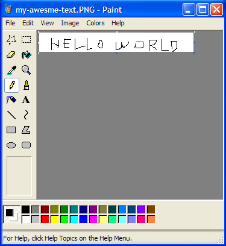
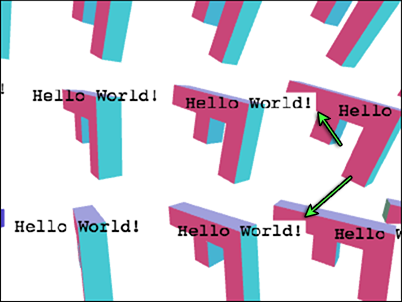

Cet article est la suite de nombreux articles sur WebGL. Le dernier traitait de l’utilisation de Canvas 2D pour rendre du texte par-dessus un canvas WebGL. Si vous ne l’avez pas lu, vous voudrez peut-être le consulter avant de continuer.
Dans le dernier article, nous avons vu comment utiliser un canvas 2D pour dessiner du texte par-dessus votre scène WebGL. Cette technique fonctionne et est facile à mettre en œuvre, mais elle a une limitation : le texte ne peut pas être occulté par d’autres objets 3D. Pour ce faire, nous avons réellement besoin de dessiner le texte dans WebGL.
La façon la plus simple de le faire est de créer des textures contenant du texte. Vous pourriez par exemple aller dans Photoshop ou un autre programme de dessin et créer une image avec du texte dedans.

Ensuite, créez de la géométrie de plan et affichez-la. C’est en fait comment certains jeux sur lesquels j’ai travaillé affichaient tout leur texte. Par exemple, Locoroco n’avait qu’environ 270 chaînes. Il était localisé en 17 langues. Nous avions une feuille Excel avec toutes les langues et un script qui lançait Photoshop et générait une texture, une pour chaque message dans chaque langue.
Bien sûr, vous pouvez aussi générer les textures à l’exécution. Puisque WebGL est dans le navigateur, nous pouvons à nouveau nous appuyer sur l’API Canvas 2D pour aider à générer nos textures.
En partant des exemples de l’article précédent, ajoutons une fonction pour remplir un canvas 2D avec du texte
var textCtx = document.createElement("canvas").getContext("2d");
// Met le texte au centre du canvas.
function makeTextCanvas(text, width, height) {
textCtx.canvas.width = width;
textCtx.canvas.height = height;
textCtx.font = "20px monospace";
textCtx.textAlign = "center";
textCtx.textBaseline = "middle";
textCtx.fillStyle = "black";
textCtx.clearRect(0, 0, textCtx.canvas.width, textCtx.canvas.height);
textCtx.fillText(text, width / 2, height / 2);
return textCtx.canvas;
}
Maintenant que nous devons dessiner 2 choses différentes dans WebGL, le ‘F’ et notre texte, je vais
passer à l’utilisation de fonctions helpers comme décrit dans un article précédent.
Si ce que sont programInfo, bufferInfo, etc. n’est pas clair, consultez cet article.
Donc, créons le ‘F’ et un quad unitaire.
// Créer des données pour le 'F'
var fBufferInfo = primitives.create3DFBufferInfo(gl);
var fVAO = webglUtils.createVAOFromBufferInfo(
gl, fProgramInfo, fBufferInfo);
// Créer un quad unitaire pour le 'texte'
var textBufferInfo = primitives.createXYQuadBufferInfo(gl, 1);
var textVAO = webglUtils.createVAOFromBufferInfo(
gl, textProgramInfo, textBufferInfo);
Le quad XY est un quad (carré) de 1 unité de taille. Celui-ci est centré à l’origine. Étant de 1 unité, ses extrémités sont -0.5, -0.5 et 0.5, 0.5.
Ensuite, créez 2 shaders
// configurer les programmes GLSL
var fProgramInfo = webglUtils.createProgramInfo(
gl, [fVertexShaderSource, fFragmentShaderSource]);
var textProgramInfo = webglUtils.createProgramInfo(
gl, [textVertexShaderSource, textFragmentShaderSource]);
Et créez notre texture de texte. Nous générons des mips car le texte deviendra petit
// créer la texture de texte.
var textCanvas = makeTextCanvas("Hello!", 100, 26);
var textWidth = textCanvas.width;
var textHeight = textCanvas.height;
var textTex = gl.createTexture();
gl.bindTexture(gl.TEXTURE_2D, textTex);
gl.texImage2D(gl.TEXTURE_2D, 0, gl.RGBA, gl.RGBA, gl.UNSIGNED_BYTE, textCanvas);
gl.generateMipmap(gl.TEXTURE_2D);
gl.texParameteri(gl.TEXTURE_2D, gl.TEXTURE_WRAP_S, gl.CLAMP_TO_EDGE);
gl.texParameteri(gl.TEXTURE_2D, gl.TEXTURE_WRAP_T, gl.CLAMP_TO_EDGE);
Configurez les uniforms pour le ‘F’ et le texte
var fUniforms = {
u_matrix: m4.identity(),
};
var textUniforms = {
u_matrix: m4.identity(),
u_texture: textTex,
};
Maintenant, quand nous calculons les matrices pour le F, nous commençons avec la viewMatrix au lieu de la viewProjectionMatrix comme dans d’autres exemples. Nous la multiplions par les parties qui constituent l’orientation de notre F.
var fViewMatrix = m4.translate(viewMatrix,
translation[0] + xx * spread, translation[1] + yy * spread, translation[2]);
fViewMatrix = m4.xRotate(fViewMatrix, rotation[0]);
fViewMatrix = m4.yRotate(fViewMatrix, rotation[1] + yy * xx * 0.2);
fViewMatrix = m4.zRotate(fViewMatrix, rotation[2] + now + (yy * 3 + xx) * 0.1);
fViewMatrix = m4.scale(fViewMatrix, scale[0], scale[1], scale[2]);
fViewMatrix = m4.translate(fViewMatrix, -50, -75, 0);
Puis enfin nous multiplions par la projectionMatrix lors de la définition de notre valeur d’uniform.
fUniforms.u_matrix = m4.multiply(projectionMatrix, fViewMatrix);
Il est important de noter ici que projectionMatrix est à gauche. Cela nous permet de
multiplier la projectionMatrix comme si c’était la première matrice. Normalement,
nous multiplions à droite.
Dessiner le F ressemble à ceci
// configurer pour dessiner le 'F'
gl.useProgram(fProgramInfo.program);
// configurer les attributs et buffers pour le F
gl.bindVertexArray(fVAO);
fUniforms.u_matrix = m4.multiply(projectionMatrix, fViewMatrix);
webglUtils.setUniforms(fProgramInfo, fUniforms);
webglUtils.drawBufferInfo(gl, fBufferInfo);
Pour le texte, nous commençons avec la projectionMatrix puis prenons seulement la position depuis la fViewMatrix que nous avons sauvegardée avant. Cela nous donnera un espace devant la vue. Nous devons aussi mettre à l’échelle notre quad unitaire pour correspondre aux dimensions de la texture.
// utiliser juste la position de vue du 'F' pour le texte
var textMatrix = m4.translate(projectionMatrix,
fViewMatrix[12], fViewMatrix[13], fViewMatrix[14]);
// mettre le F à l'échelle dont on a besoin.
textMatrix = m4.scale(textMatrix, textWidth, textHeight, 1);
Et ensuite rendre le texte
// configurer pour dessiner le texte.
gl.useProgram(textProgramInfo.program);
gl.bindVertexArray(textVAO);
m4.copy(textMatrix, textUniforms.u_matrix);
webglUtils.setUniforms(textProgramInfo, textUniforms);
// Dessiner le texte.
webglUtils.drawBufferInfo(gl, textBufferInfo);
Voilà donc
Vous remarquerez que parfois des parties de notre texte couvrent des parties de nos F. C’est parce que nous dessinons un quad. La couleur par défaut du canvas est noir transparent (0,0,0,0) et nous dessinons cette couleur dans le quad. Nous pourrions plutôt mélanger nos pixels.
gl.enable(gl.BLEND);
gl.blendFunc(gl.SRC_ALPHA, gl.ONE_MINUS_SRC_ALPHA);
Cela fait qu’il prend le pixel source (la couleur de notre fragment shader) et le combine
avec le pixel de destination (la couleur dans le canvas) selon la fonction de mélange. Nous avons défini la
fonction de mélange à SRC_ALPHA pour la source et ONE_MINUS_SRC_ALPHA pour la destination.
result = dest * (1 - src_alpha) + src * src_alpha
donc par exemple si la destination est verte 0,1,0,1 et la source est rouge 1,0,0,1 on aurait
src = [1, 0, 0, 1]
dst = [0, 1, 0, 1]
src_alpha = src[3] // c'est 1
result = dst * (1 - src_alpha) + src * src_alpha
// ce qui est la même chose que
result = dst * 0 + src * 1
// ce qui est la même chose que
result = src
Pour les parties de la texture avec du noir transparent 0,0,0,0
src = [0, 0, 0, 0]
dst = [0, 1, 0, 1]
src_alpha = src[3] // c'est 0
result = dst * (1 - src_alpha) + src * src_alpha
// ce qui est la même chose que
result = dst * 1 + src * 0
// ce qui est la même chose que
result = dst
Voici le résultat avec le mélange activé.
Vous pouvez voir que c’est mieux mais pas encore parfait. Si vous regardez de près, vous verrez parfois ce problème

Que se passe-t-il ? Nous dessinons actuellement un F puis son texte, puis le F suivant puis son texte, répété. Nous avons encore un depth buffer donc quand nous dessinons le texte d’un F, même si le mélange a fait que certains pixels restent la couleur de fond, le depth buffer a quand même été mis à jour. Quand nous dessinons le F suivant, si des parties de ce F sont derrière ces pixels d’un texte dessiné précédemment, ils ne seront pas dessinés.
Nous venons de rencontrer l’un des problèmes les plus difficiles du rendu 3D sur un GPU. La transparence a des problèmes.
La solution la plus courante pour presque tout le rendu transparent est de dessiner toutes les choses opaques d’abord, puis après, dessiner toutes les choses transparentes triées par distance z avec le test du depth buffer activé mais la mise à jour du depth buffer désactivée.
Séparons d’abord le dessin des choses opaques (les F) des choses transparentes (le texte). D’abord nous déclarerons quelque chose pour mémoriser les positions du texte.
var textPositions = [];
Et dans la boucle de rendu des F, nous mémoriserons ces positions
// mémoriser la position pour le texte
textPositions.push([fViewMatrix[12], fViewMatrix[13], fViewMatrix[14]]);
Avant de dessiner les ‘F’, nous désactiverons le mélange et activerons l’écriture dans le depth buffer
gl.disable(gl.BLEND);
gl.depthMask(true);
Pour dessiner le texte, nous activerons le mélange et désactiverons l’écriture dans le depth buffer.
gl.enable(gl.BLEND);
gl.blendFunc(gl.SRC_ALPHA, gl.ONE_MINUS_SRC_ALPHA);
gl.depthMask(false);
Et ensuite dessiner le texte à toutes les positions que nous avons sauvegardées
textPositions.forEach(function(pos) {
// utiliser juste la position de vue du 'F' pour le texte
var textMatrix = m4.translate(projectionMatrix,
pos[0], pos[1], pos[2]);
// mettre le F à l'échelle dont on a besoin.
textMatrix = m4.scale(textMatrix, textWidth, textHeight, 1);
// configurer pour dessiner le texte.
gl.useProgram(textProgramInfo.program);
gl.bindVertexArray(textVAO);
m4.copy(textMatrix, textUniforms.u_matrix);
webglUtils.setUniforms(textProgramInfo, textUniforms);
// Dessiner le texte.
webglUtils.drawBufferInfo(gl, textBufferInfo);
});
Et maintenant ça fonctionne en grande partie
Remarquez que nous n’avons pas trié comme je l’ai mentionné ci-dessus. Dans ce cas, puisque nous dessinons un texte principalement opaque, il n’y aura probablement aucune différence notable si nous trions, donc je laisserai ça pour un autre article.
Un autre problème est que le texte intersecte son propre ‘F’. Il n’y a pas vraiment de solution spécifique pour ça. Si vous faisiez un MMO et vouliez que le texte de chaque joueur apparaisse toujours, vous pourriez essayer de faire apparaître le texte au-dessus de la tête. Traduisez-le simplement de +Y un certain nombre d’unités, assez pour s’assurer qu’il était toujours au-dessus du joueur.
Vous pouvez aussi le déplacer vers l’avant, vers la caméra. Faisons ça ici pour le plaisir. Parce que ‘pos’ est dans l’espace de vue, cela signifie qu’il est relatif à l’œil (qui est à 0,0,0 dans l’espace de vue). Donc si on le normalise, on obtient un vecteur unitaire pointant de l’œil vers ce point, qu’on peut ensuite multiplier par un certain montant pour déplacer le texte d’un nombre spécifique d’unités vers ou loin de l’œil.
+// parce que pos est dans l'espace de vue, cela signifie que c'est un vecteur depuis l'œil vers
+// une certaine position. Donc on translate le long de ce vecteur en revenant vers l'œil d'une certaine distance
+var fromEye = m4.normalize(pos);
+var amountToMoveTowardEye = 150; // parce que le F fait 150 unités de long
+var viewX = pos[0] - fromEye[0] * amountToMoveTowardEye;
+var viewY = pos[1] - fromEye[1] * amountToMoveTowardEye;
+var viewZ = pos[2] - fromEye[2] * amountToMoveTowardEye;
var textMatrix = m4.translate(projectionMatrix,
* viewX, viewY, viewZ);
// mettre le F à l'échelle dont on a besoin.
textMatrix = m4.scale(textMatrix, textWidth, textHeight, 1);
Voici ça.
Vous pourriez encore remarquer un problème avec les bords des lettres.
Le problème ici est que l’API Canvas 2D produit uniquement des valeurs d’alpha prémultipliées. Quand nous téléversons le contenu du canvas vers une texture, WebGL essaie de dé-prémultiplier les valeurs mais il ne peut pas le faire parfaitement car l’alpha prémultiplié est avec perte.
Pour corriger ça, disons à WebGL de ne pas dé-prémultiplier
gl.pixelStorei(gl.UNPACK_PREMULTIPLY_ALPHA_WEBGL, true);
Cela dit à WebGL de fournir des valeurs d’alpha prémultipliées à gl.texImage2D et gl.texSubImage2D.
Si les données passées à gl.texImage2D sont déjà prémultipliées comme c’est le cas pour les données Canvas 2D,
WebGL peut simplement les passer telles quelles.
Nous devons aussi changer la fonction de mélange
-gl.blendFunc(gl.SRC_ALPHA, gl.ONE_MINUS_SRC_ALPHA);
+gl.blendFunc(gl.ONE, gl.ONE_MINUS_SRC_ALPHA);
L’ancienne multipliait la couleur source par son alpha. C’est ce que SRC_ALPHA signifie. Mais
maintenant les données de notre texture ont déjà été multipliées par leur alpha. C’est ce que prémultiplié signifie.
Donc nous n’avons pas besoin que le GPU fasse la multiplication. Le définir à ONE signifie multiplier par 1.
Les bords ont disparu maintenant.
Que faire si vous voulez garder le texte à une taille fixe mais quand même trier correctement ? Eh bien, si vous vous souvenez
de l’article sur la perspective, notre matrice de perspective va
mettre à l’échelle notre objet par -Z pour le rendre plus petit à distance. Donc, on peut juste mettre à l’échelle
par -Z fois une échelle désirée pour compenser.
...
// parce que pos est dans l'espace de vue, cela signifie que c'est un vecteur depuis l'œil vers
// une certaine position. Donc on translate le long de ce vecteur en revenant vers l'œil d'une certaine distance
var fromEye = normalize(pos);
var amountToMoveTowardEye = 150; // parce que le F fait 150 unités de long
var viewX = pos[0] - fromEye[0] * amountToMoveTowardEye;
var viewY = pos[1] - fromEye[1] * amountToMoveTowardEye;
var viewZ = pos[2] - fromEye[2] * amountToMoveTowardEye;
+var desiredTextScale = -1 / gl.canvas.height; // pixels 1x1
+var scale = viewZ * desiredTextScale;
var textMatrix = m4.translate(projectionMatrix,
viewX, viewY, viewZ);
// mettre le F à l'échelle dont on a besoin.
textMatrix = m4.scale(textMatrix, textWidth * scale, textHeight * scale, 1);
...
Si vous voulez dessiner du texte différent pour chaque F, vous devriez créer une nouvelle texture pour chaque F et simplement mettre à jour les uniforms de texture pour ce F.
// créer les textures de texte, une pour chaque F
var textTextures = [
"anna", // 0
"colin", // 1
"james", // 2
"danny", // 3
"kalin", // 4
"hiro", // 5
"eddie", // 6
"shu", // 7
"brian", // 8
"tami", // 9
"rick", // 10
"gene", // 11
"natalie",// 12,
"evan", // 13,
"sakura", // 14,
"kai", // 15,
].map(function(name) {
var textCanvas = makeTextCanvas(name, 100, 26);
var textWidth = textCanvas.width;
var textHeight = textCanvas.height;
var textTex = gl.createTexture();
gl.bindTexture(gl.TEXTURE_2D, textTex);
gl.pixelStorei(gl.UNPACK_FLIP_Y_WEBGL, true);
gl.pixelStorei(gl.UNPACK_PREMULTIPLY_ALPHA_WEBGL, true);
gl.texImage2D(gl.TEXTURE_2D, 0, gl.RGBA, gl.RGBA, gl.UNSIGNED_BYTE, textCanvas);
gl.generateMipmap(gl.TEXTURE_2D);
gl.texParameteri(gl.TEXTURE_2D, gl.TEXTURE_WRAP_S, gl.CLAMP_TO_EDGE);
gl.texParameteri(gl.TEXTURE_2D, gl.TEXTURE_WRAP_T, gl.CLAMP_TO_EDGE);
return {
texture: textTex,
width: textWidth,
height: textHeight,
};
});
Puis au moment du rendu, sélectionner une texture
*textPositions.forEach(function(pos, ndx) {
+// sélectionner une texture
+var tex = textTextures[ndx];
Utiliser la taille de cette texture dans nos calculs de matrice
var textMatrix = m4.translate(projectionMatrix,
viewX, viewY, viewZ);
// mettre le F à l'échelle dont on a besoin.
*textMatrix = m4.scale(textMatrix, tex.width * scale, tex.height * scale, 1);
et définir l’uniform pour la texture avant de dessiner
textUniforms.u_texture = tex.texture;
Nous avons utilisé du noir pour dessiner le texte dans le canvas. Ce serait plus utile si nous rendions le texte en blanc. Ensuite, nous pourrions multiplier le texte par une couleur et le rendre de n’importe quelle couleur souhaitée.
D’abord, nous changerons le shader de texte pour multiplier par une couleur
...
in vec2 v_texcoord;
uniform sampler2D u_texture;
+uniform vec4 u_color;
out vec4 outColor;
void main() {
* outColor = texture2D(u_texture, v_texcoord) * u_color;
}
Et quand nous dessinons le texte dans le canvas, utilisons le blanc
textCtx.fillStyle = "white";
Ensuite, nous créerons des couleurs
// couleurs, 1 pour chaque F
var colors = [
[0.0, 0.0, 0.0, 1], // 0
[1.0, 0.0, 0.0, 1], // 1
[0.0, 1.0, 0.0, 1], // 2
[1.0, 1.0, 0.0, 1], // 3
[0.0, 0.0, 1.0, 1], // 4
[1.0, 0.0, 1.0, 1], // 5
[0.0, 1.0, 1.0, 1], // 6
[0.5, 0.5, 0.5, 1], // 7
[0.5, 0.0, 0.0, 1], // 8
[0.0, 0.0, 0.0, 1], // 9
[0.5, 5.0, 0.0, 1], // 10
[0.0, 5.0, 0.0, 1], // 11
[0.5, 0.0, 5.0, 1], // 12,
[0.0, 0.0, 5.0, 1], // 13,
[0.5, 5.0, 5.0, 1], // 14,
[0.0, 5.0, 5.0, 1], // 15,
];
Au moment du dessin, nous sélectionnons une couleur
// définir l'uniform de couleur
textUniforms.u_color = colors[ndx];
Couleurs
Cette technique est en fait la technique que la plupart des navigateurs utilisent quand ils sont accélérés par GPU. Ils génèrent des textures avec votre contenu HTML et tous les différents styles que vous avez appliqués et tant que ce contenu ne change pas, ils peuvent simplement rendre à nouveau la texture quand vous faites défiler, etc. Bien sûr, si vous mettez à jour les choses tout le temps, alors cette technique pourrait devenir un peu lente car régénérer les textures et les re-téléverser vers le GPU est une opération relativement lente.